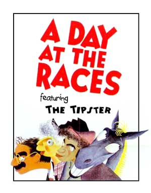

|

A Day at the Races with The Tipster
For all practical purposes, does it matter if someone is a liar, misinformed, incompetent, or simply stupid?
- - - - - - - - - -
by Fred Clark
 KAY, so you're going to the track and your friend tells you to check in with The Tipster before you place your bets. KAY, so you're going to the track and your friend tells you to check in with The Tipster before you place your bets.
So you find the guy and he tells you he's got a sure thing in the fourth race. So you put your money down, following his advice, picking Restored Honor to win, Dignity of the Office to place and Changing the Tone to show.
The fourth race comes up and you lose, watching Harken Hijinx and Partisan Pitbull in first and second, with Vandalism Fraud just edging out DUI Disclosure for third.
So you tell your friend The Tipster lied to you.
"Lie is a strong word," your buddy says. "It was really just a matter of emphasis."
"The guy is 0-for-3," you say.
"Hey, these are picks," your friend reminds you. "They're not guarantees."
When you point out that The Tipster said it was a "sure thing," your friend tells you that you don't understand how the game works. "That's just a term of art," he says. So you figure you'll give The Tipster another chance.
This time he tells you to bet on Ongoing Surplus, Balanced Budget and Sacred Lockbox. You place your bets and you lose again -- this time to three ponies named Record Deficit, Prodigal Tax Cuts and $7 Trillion And Counting. Your wallet is really hurting and it looks like you've been had.
"That tipster is a liar," you say again.
"Go easy with the L-word," your buddy says. "Just because someone repeatedly tells you things that turn out not to be true doesn't make that person a liar. Maybe he just got some bad intelligence. Or maybe he was ideologically self-deceived. Or maybe he has secret, classified reasons for not telling you the truth -- you know, for matters of national security."
"National security?" you say. "Everybody who listened to this guy is broke."
"Calm down," your friend says. "You can't prove intent. He's no liar."
Thinking maybe you should have "sucker" tattooed on your forehead, you head back to The Tipster for another try.
He tells you he's got a can't-miss scoop and you put your money on Domestic Security, Four Freedoms and Twin Towers. The three horses collide out of the gate. You've never seen anything so horrible. They end up having to shoot all three horses, plus the jockeys, the track announcer and several thousand people in the grandstands.
"That was the worst thing I've ever seen," you tell your friend. "It was an unprecedented calamity. I'm never trusting this guy again."
But your friend says that just because the disaster took place on The Tipster's watch doesn't mean he bears any responsibility for it.
"You said yourself it was unprecedented," he reminds you. "So how could he have foreseen that?"
You're thinking that it's a tipster's job to foresee such things, but you let it pass.
"Sure, we're all broke and thousands are dead," your friend says, "but that just means that it's time to rally behind The Tipster. At times like this we all have to band together for the good of the racing community."
This odd argument somehow strikes you as hypnotically compelling. You go back to relying on the miserable failure of a tipster, still feeling like a sucker, but somehow proud to be one. Following his lead, you blow your next paycheck on a horse called Dead Or Alive. It doesn't win, place or show, and you can't even get anybody at the window to tell you where it finished. It's like it just disappeared.
This goes on for years. You keep staking your fortunes based on what The Tipster says and you keep getting burned. In all this time only one of his picks even manages to show -- a skinny nag named Jobless Recovery -- but it doesn't pay very well.
Finally, you tell your friend you're about done. You're willing to give The Tipster one last chance to prove he's even remotely worth listening to. One last chance and that's it.
Surprisingly, your friend agrees.
"Fair enough," he says. "See who he's picking in the Iraqi Stakes. If that doesn't work out just the way he says, you have every right to ignore him in the future."
So it all comes down to this. You take every dime you can scrape together and put it all down on the three horses The Tipster assures you are a sure thing -- Terrorist Ties, Imminent Danger and Democratic Beacon.
You lose, tearing up your tickets as Nigerian Forgery, Doctored Intel and Gaza-On-The-Tigris win running away.
"That's it!" you tell your friend. "You said yourself that this race should be the deciding factor and it was. He lied again. The Tipster is a liar!"
"Whoa! Calm down. Again with the L-word," your friend says. "He told you those horses would win, so you just assumed he meant today? You've just got to give it time.
"And remember you still can't prove he was lying. He may just have been mistaken. Or deluded. Or caught up in an exaggeration. He may have been given bad information himself. So you can't say he's a liar.
"Don't you see? Just because someone is consistently mistaken or deluded -- just because everything he tells you isn't true -- that doesn't mean he can't be trusted, does it? Does it?"

|